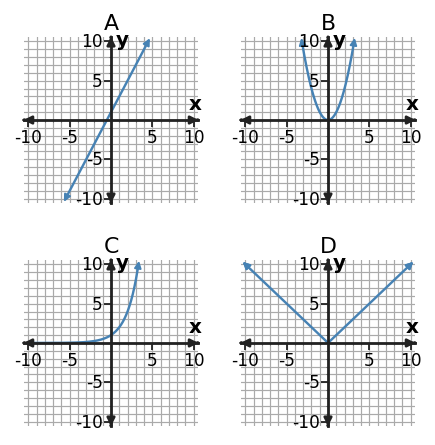

Algebra 1 · Unit 8 · Section 8.5 · Investigation
Function Synthesis Challenge
Function Synthesis and Capstone Analysis
Learning Target: Students will synthesize understanding of function families and representations to solve complex problems.
Directions
- Work with a partner unless your teacher assigns a different grouping.
- Show the evidence you use, not only the final answer.
- When a representation changes, keep the meaning of the quantities attached to your work.
- Revise an answer if later evidence shows that your first claim was incomplete.
Part 1 · Representation Triage

| Question | Best first representation | Why? |
|---|---|---|
| Which model has a turning point? | ||
| Which model has constant multiplicative change? | ||
| When do two models have equal outputs? | ||
| Which feature has contextual meaning? |
Part 2 · Cross-Check a Claim
A student selects an exponential model because the graph rises quickly. Write two independent checks that should be performed before accepting the claim.
Part 3 · Multi-Step Synthesis
Model A is $A(x)=2x+8$. Model B is $B(x)=x^2-4x+8$. Find inputs where outputs are equal, then explain how a graph could verify the result.
Part 4 · Reflection
Write a short strategy for a future problem that mixes context, table, graph, and equation evidence. Your strategy should say when to switch representations.